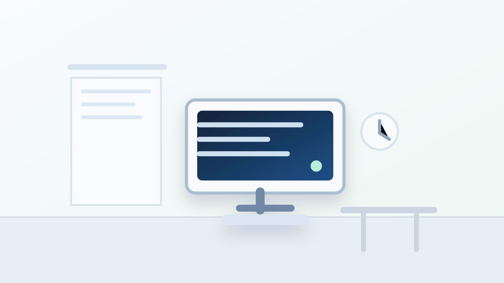
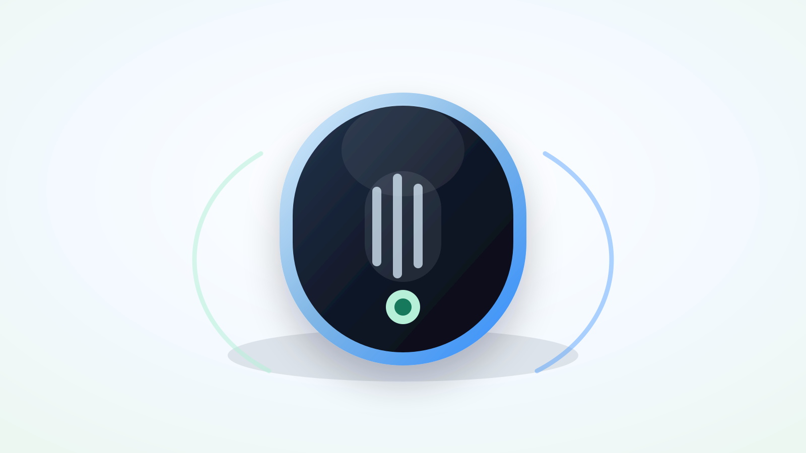

historia del sistema médico


Datos importantes que identificamos
85%
del tiempo del médico puede terminar absorbido por el computador.
Dato de trabajo para validar localmente durante el piloto con médicos del hospital.
49.2% vs 27%
86 min
Dato importante: el sistema se está comiendo la consulta.
más tiempo en EHR/escritorio que en atención clínica directa durante la jornada.
Sinsky et al., Annals of Internal Medicine, 2016.
de trabajo EHR adicional diario fuera de la consulta en estudios de atención primaria.
Arndt et al., Annals of Family Medicine, 2017.
Problema humano
El paciente busca
El médico busca
El médico no debería elegir entre mirar al paciente o completar el registro.
Sentirse atendido.
- Que lo miren.
- Que le expliquen.
- Que lo escuchen.
Trabajar con claridad.
- Pensar con calma.
- Tener contexto clínico.
- Documentar sin fricción.
La documentación es necesaria; el problema es cuando interrumpe la atención.
Problema operativo
El costo no está en una consulta: está en miles de minutos acumulados.
Minutos de documentación × número de atenciones × número de médicos = horas clínicas recuperables
En un hospital, una fricción pequeña repetida muchas veces se convierte en carga médica, tiempo perdido y presión operativa.
Menos tiempodisponible para el paciente.
Más cargamental y administrativa para el médico.
Más presiónoperativa para el hospital.
Hospital San Juan de Dios
Humanización
Eficiencia
Seguridad clínica
Tecnología útil
San Juan de Dios necesita eficiencia sin perder humanización.
En instituciones con múltiples servicios, alta demanda asistencial y equipos clínicos diversos, cada minuto administrativo que se reduce puede convertirse en más tiempo clínico, mejor experiencia médica y una atención más humana.
Más presencia en la consulta.
Menos carga repetitiva.
Validación médica antes del registro.
Valor medible sin transformación pesada.
Solución
Miracle convierte la conversación clínica en documentación asistida.
Captura información relevante de la consulta y la transforma en documentación útil para el médico, reduciendo fricción sin reemplazar criterio clínico.
01Consulta médica
02Escucha clínica
03Nota sugerida
04Revisión del médico
05Registro final
Miracle asiste. El médico decide, corrige y aprueba.
Bajo riesgo operativo
Sin Miracle
Con Miracle
No cambiamos el sistema del hospital: reducimos la fricción sobre él.
- Médico escribe más.
- Menos contacto visual.
- Registro más pesado.
- Carga acumulada.
- Médico valida más.
- Más presencia clínica.
- Registro asistido.
- Flujo más liviano.
El objetivo no es reemplazar el flujo hospitalario, sino aliviar la carga documental dentro de un piloto controlado.
Piloto propuesto
2+
médicos reales, agenda real, medición real.
Piloto controlado con mínimo 2 médicos.
Servicio inicialUno, definido con el hospital.
Duración sugerida2 a 4 semanas.
Control clínicoEl médico valida todo.
CierreInforme final para gerencia.
Tiempo de documentación
Trabajo posterior
Satisfacción médica
Calidad de nota
Correcciones
Intención de uso
Presencia en consulta
No pedimos adopción masiva. Pedimos medir valor real con médicos reales, en un entorno controlado.
Economía y decisión
Valor potencial
Horas recuperadas × costo hora médica × número de médicos
Escalar solo si los datos justifican el valor.
Los números económicos se agregan cuando tengamos el costo del piloto y la medición local.
1Costo del piloto.
2Qué incluye.
3Horas médicas recuperadas.
4Condición para escalar.
5Próximo paso.
Aprobar piloto
Seleccionar 2 médicos
Elegir servicio
Definir responsables
Agendar inicio
Si el piloto no demuestra valor, no se escala. Si demuestra valor, el hospital decide con datos propios.